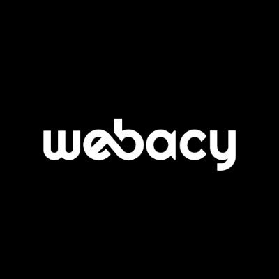
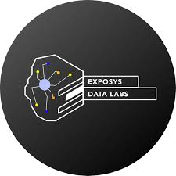

ABOUT ME
Versatile technology professional with a strong foundation in full-stack development and cybersecurity, dedicated to driving innovation and optimizing processes. Known for transforming complex data into actionable insights and enhancing user experiences through robust software solutions. Passionate about leveraging advanced analytics, machine learning, and visualization techniques to support data-driven decision-making. Committed to continuous learning and collaboration, I thrive in environments where knowledge sharing empowers teams and contributes to organizational success in a rapidly evolving digital landscape.

University Of North Carolina at Charlotte
Masters in IT & Emerging TechResearch & Teaching Assistant for Visual Analytics
Aug 2023 - Present

Sept 2024 - November 2024Analyzed and labeled 100+ smart contract vulnerabilities, enhancing risk assessment and data accuracy for Web3 security. Validated data labels to improve dataset reliability, achieving 95% accuracy..
Conducted frequency and correlation analysis on risk tags, identifying top 5 vulnerabilities and their associations.
Applied unsupervised machine learning techniques, clustering 1,000+ contracts to profile risk patterns effectively.
Led development of a threat detection system using machine learning, achieving 85% accuracy in real-time anomaly detection.
Tools: Tools: Python, Pandas, Scikit-learn, TensorFlow, PyTorch, Jupyter Notebook, Matplotlib, Seaborn, Web 3, Etherscan, GitHub, security-focused smart contract analysis tools.
Webacy
Web 3 Security Data Analyst ExternSept 2024 - November 2024

Capgemini
Senior Data Analyst/ Software Developer
June 2022 - July 2023
Senior Data Analyst Intern
January 2022 - June 2022

Jul 2021 - Aug 2021Worked with the Diabetic Disease prediction.
Worked with prediction models, such as KNN and SVM, analyze medical features like glucose levels, BMI, and insulin concentration to classify individuals as diabetic or non-diabetic with an accuracy of up to 81.81%.
These models leverage statistical patterns in health data for early detection and risk assessment.
Tools: Python, Jupyter Notebook, ML
Exposys Data Labs
Data Science and Analytics InternJul 2021 - Aug 2021

Vellore Institute of Technology, Chennai
Bachelors in Electronics and Communication EngineeringJul 2018 - May 2022
- © Yaswitha Sai Atluri